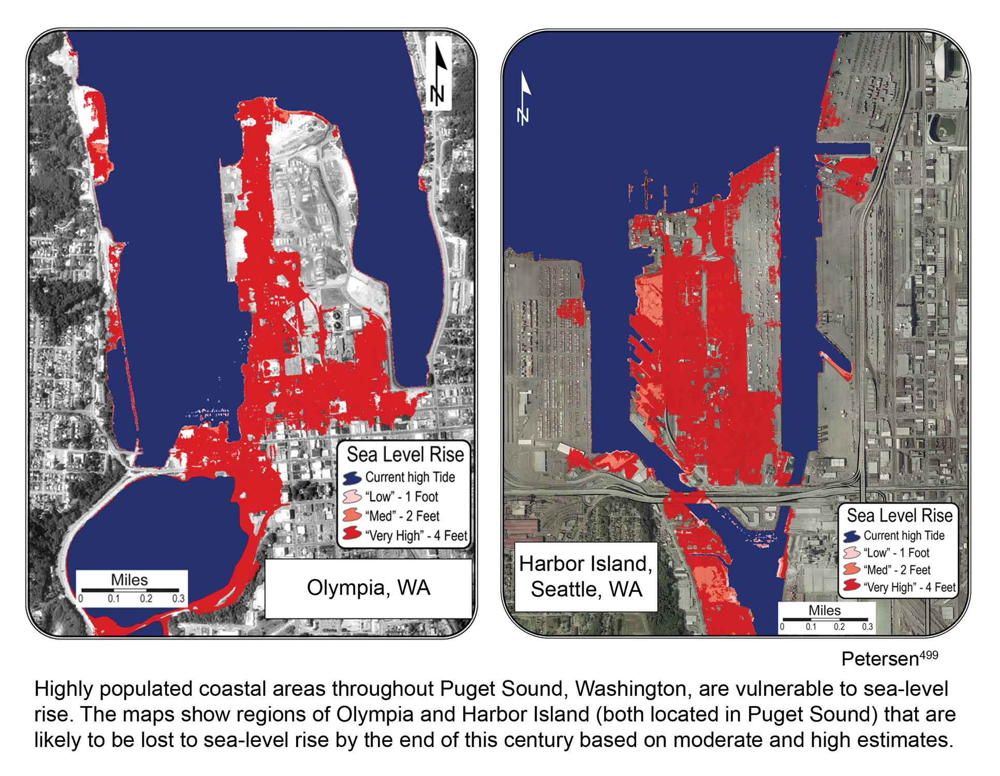

Collaborating with Cascadia Consulting Group, Adaptation International developed a Climate Impacts Planning Tool for the City of Seattle. This tool filters through and summarizes the regional climate impact projects in three key areas: temperature, precipitation, and sea level rise. By inputting a few key project parameters, type of project, project location, and project lifespan, capital improvement project managers can use the tool to identify key climate impacts early in the planning process. With its user friendly interface, this tool represents a solid first step at mainstreaming adaptation planning.
Developing climate science information that can be used to make decisions is critical in addressing climate change and creating more resilient communities and businesses. With the Climate Impacts Group at the University of Washington, Sascha helped develop regional sea level rise projections for Washington State. He also used high resolution LiDAR (Light Detection And Ranging) data to create geographic information system (GIS) based inundation maps for selected municipalities. Mapping low, medium, and high relative sea level rise scenarios provided a basis for the City of Seattle and King County to evaluate and consider sea level rise response options. The maps were cited in the recent Global Climate Change Impacts on the U.S. (2009) report by the United States Global Climate Change Research Program.
Starting summer 2011, Adaptation International will be assisting with the development of Tucson’s Climate Mitigation and Adaptation Plan. The proposal submitted in partnership with Cascadia Consulting Group and the Stockholm Environmental Institute (SEI) was selected to support the development and prioritization of both mitigation and adaptation strategies for the City of Tucson. We are excited to not only work with the City of Tucson, but also the climate experts at Cascadia and SEI to help Tucson reduce greenhouse gas emissions and become a more climate resilient community.
{kind=link}
{kind=link}